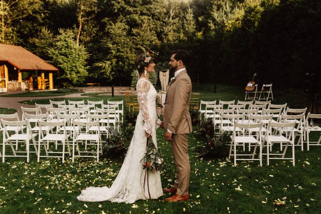
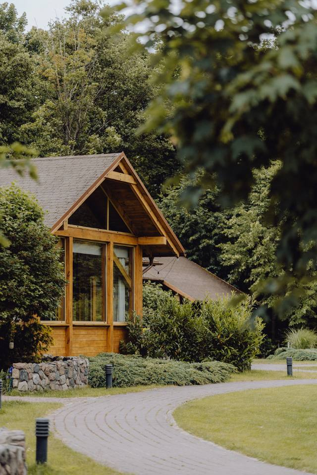
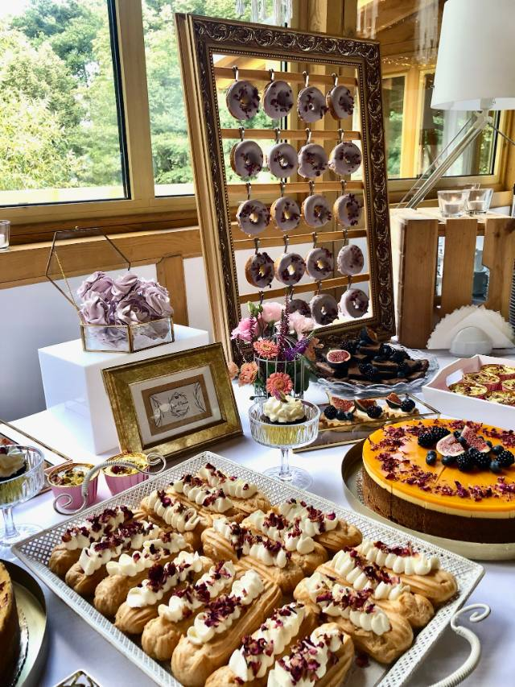
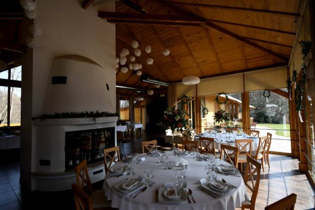

Wszystko, co warto wiedzieć o weselach, ślubach plenerowych i organizacji przyjęć w Gdańsku — z doświadczenia Kalinówki.
Coraz więcej par marzy o ślubie, który jest piękny i odpowiedzialny zarazem. Podpowiadamy, jak zaplanować wesele bez zbędnych odpadów — od dekoracji z żywych roślin po menu oparte na lokalnych produktach.
Czytaj artykuł
Mniej przepychu, więcej autentyczności. Sprawdź, co będzie królować na weselach w 2026 roku — od palet kolorów po format przyjęć.
Czytaj artykuł
Ceremonia pod gołym niebem to marzenie wielu par. Zebraliśmy praktyczne wskazówki, dzięki którym plener wyjdzie pięknie — bez względu na pogodę.
Czytaj artykuł
Od zaręczyn do dnia ślubu — krok po kroku, w jakiej kolejności planować, by uniknąć stresu i niczego nie pominąć.
Czytaj artykuł
Dzielimy się tym, co nowego dzieje się w Kalinówce — odświeżona przestrzeń, nowe pomysły i plany na kolejne sezony przyjęć.
Czytaj artykuł
Domowa kuchnia, sezonowość i kilka trików, dzięki którym Wasze menu zapamiętają wszyscy goście. Praktyczny poradnik krok po kroku.
Czytaj artykuł
Lista pytań, które warto zadać podczas prezentacji obiektu — zanim zarezerwujecie termin i podpiszecie umowę.
Czytaj artykuł